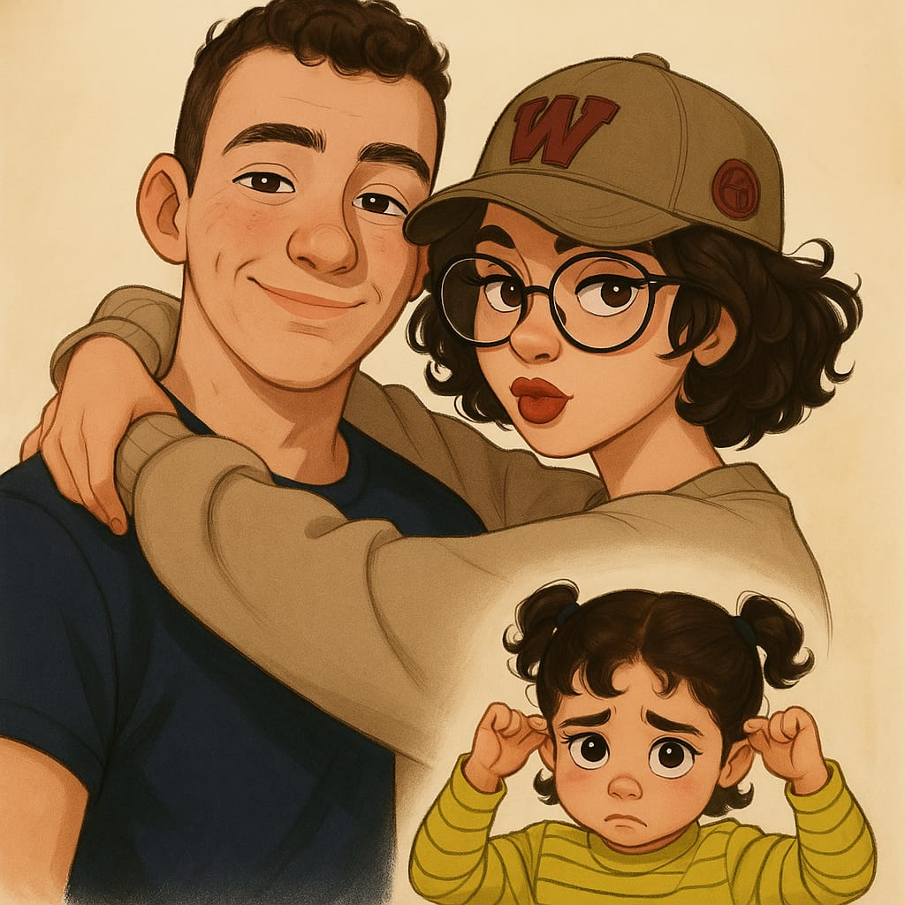

"İç sıkıntısı, kaçırılmış bir hayatın ağırlığıdır. Başka bir yaşamın mümkün olduğunun farkındayken, saçma bir hayatın içinde sıkışmanın sessiz çığlığıdır"𓆞 Merhaba! Ben İklimay, web geliştirme ve oyun tasarımı alanında kendini sürekli geliştiren bir yazılımcıyım. Kod yazmak benim için sadece teknik bir süreç değil; bir dünya kurmak, hikâyeler anlatmak demek. Yazılıma ilgim küçük yaşlarda oyun oynarken “Bu oyunu ben yapabilir miyim?” sorusuyla başladı. Unity ile geliştirdiğim 2D ve 3D projelerde mekanikler, görseller ve hikâyeyi bir araya getirerek etkileşimli deneyimler tasarlıyorum. Web tarafında ise HTML, CSS, JavaScript, React, Node.js ve Firebase gibi teknolojilerle hem kullanıcı arayüzü hem de arka plan geliştirmeleri yapıyorum.
İş birliği için GitHub profilime göz atmak isterseniz: GitHub
Projelerim
- Web Geliştirme Alanında
- Kendi yaptığım oyunun sitesini yaparak kendime bir şeyler kattım.
- Bunun yanında kurye takip sistemi projesi yaparak kendime maddi destek sağladım.
- Oyun Geliştirme Alanında
- C# dilini kullanarak unity de 3D oyun geliştiriyorum.
- Bunun dışında mobil oyunla da ilgileniyorum
2025 – Portföy Sitesi
Kişisel portföyüm. HTML, CSS, JavaScript ile responsive tasarım.
2024 – Unity Platformer
Unity ile 2D ve 3D Projeler
2022 – Web Developer
Web Geliştirme ve Oyun Geliştirmede Gelişim
|  |
𓆝 𓆟Geleceğe dair büyük hayallerim var. Belki her şey bir anda olmayacak, ama attığım küçük adımların beni hayal ettiğim yere taşıyacağına inanıyorum. Teknolojiyle küçük yaşta tanışmadım; elbette oyunlar oynadım ama teknolojiyi gerçekten anlamam, lisede başladı. Kendimi, yapabileceklerimi ve beni bekleyen bambaşka bir hayatı o zaman fark ettim. O günden sonra bu alana yöneldim, öğrendikçe geliştiğimi, geliştikçe mutlu olduğumu fark ettim. Sanki içimdeki çocuk bir yerlerde gülümsüyordu. Kendi projelerimi, fikirlerimi hayata geçirebileceğim bir dünya kurmak istiyorum. İnsanlara ilham veren, fayda sağlayan işler yapmayı; sadece yazılımla değil, dokunduğum hayatlarla da iz bırakmayı hayal ediyorum. Bir gün geriye dönüp baktığımda, bugün yaşadığım bunalımların, kararsızlıkların ve çabaların beni ben yapan parçalar olduğunu göreceğimi biliyorum. İçimdeki çocuğun umutlarını gerçekleştirebilmek için çalışmaya devam edeceğim. Ve en güzeli, bu yolculukta yalnız değilim. Sevdiğim işi yaparken, sevdiğim insanla birlikte büyümek… İşte bu, benim için en değerli gelecek. |
|---|
Eğitim Bilgilerim
| Eğitim Gördüğüm Kurumlar | Eğitim Gördüğüm Yıllar |
|---|---|
| Ankara Üniversitesi - Bilgisayar Programcılığı | 2024 - Devam ediyor / Yer: Ankara-Nallıhan |
| Tacettin Aslan Mesleki ve Teknik Anadolu Lisesi - Yazılım Geliştirme | 2020 - 2024 / Durum: Mezun / Yer: Çanakkale-Merkez |
| Şehit Ömer Halisdemir İmam Hatip Ortaokulu | 2016 - 2020 / Durum: Mezun / Yer: Çanakkale-Merkez |
| Anafartalar İlkokulu | 2012 - 2016 / Durum: Mezun / Yer: Çanakkale-Merkez |
𓆝 𓆟 Hobilerim 𓆞 𓆝
Ben sadece kod yazan biri değilim — aynı zamanda hayal kuran, keşfetmeyi seven, bazen bir oyun karakterinin hikâyesinde kaybolan biriyim.
Yazılım benim için bir ifade biçimi. Ama hayatım sadece klavyeyle değil, müzikle, oyunlarla ve bolca kahveyle şekilleniyor.
Lego ile başladığım üretme serüvenim, şimdi kendi oyun dünyalarımı kurmaya dönüştü. Hayat, biraz oyun gibi: bazen düşüyorsun, ama yeniden başlıyorsun.
Bir Not Bırakmak İstedim
Bu satıra kadar geldiysen, gerçekten tanıştığımıza memnun oldum.
Kodlar arasında bir hikâyem var ve belki seninle de bir cümlesi kesişir.
Dilersen bir kahve içer gibi konuşabiliriz.
Mail kutum her zaman açık :)